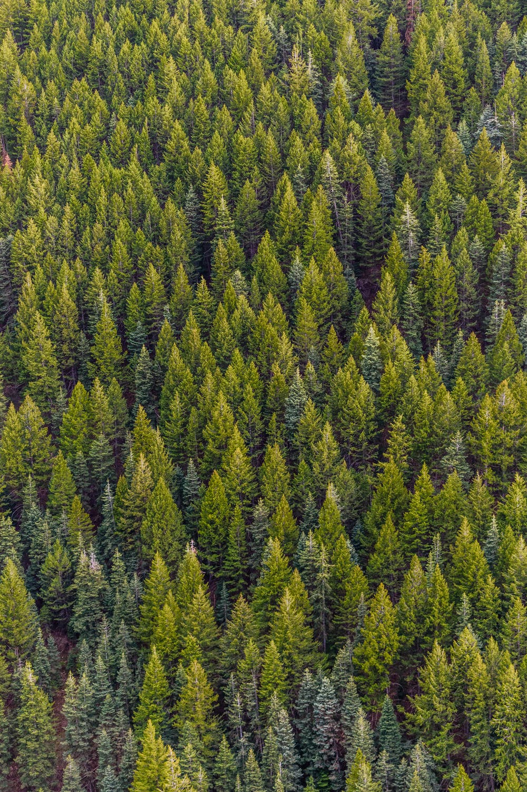
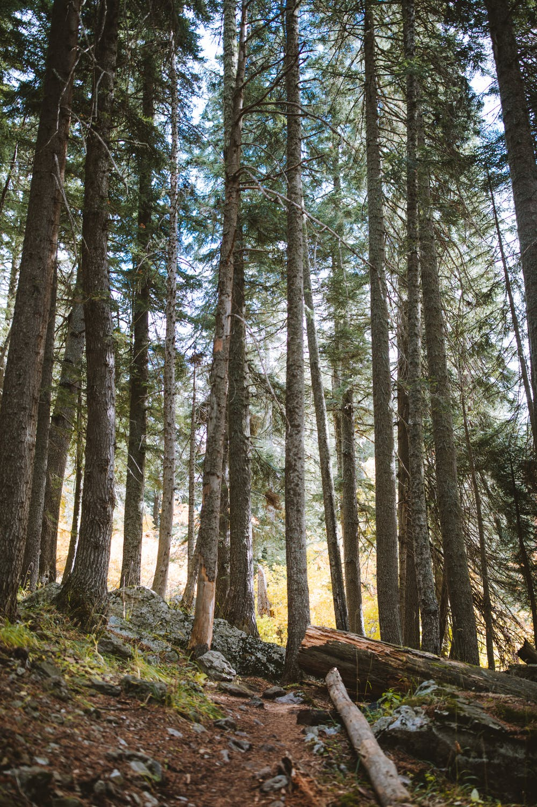
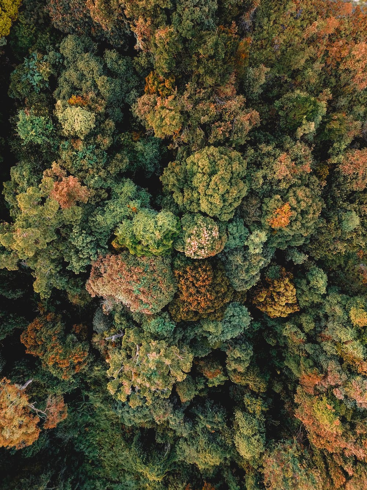

1 / 16

Africa
2 / 16

Europa
America

3 / 16
Asia

4/ 16
În fiecare minut dispar suprafețe mari de pădure: echivalentul a 30 de terenuri de fotbal. Cât citiți acest text, o zonă de pădure cât aproximativ 100 de terenuri de fotbal este distrusă. În parte pentru totdeauna. Aceste cifre nu provin din calcule abstracte, ci se bazează pe evaluarea imaginilor prin satelit, fiind compilate și publicate în cadrul proiectului "Global Forest Watch".